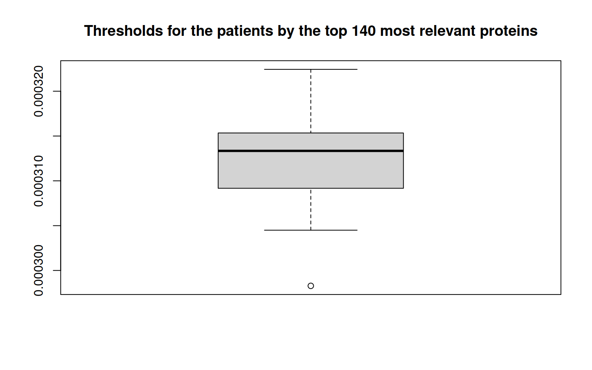

Data Integration
03/30/2022
- Overview A short introduction
- Software requirements Installation of required packages
- ndexr ndexr - interface with the network data exchange (NDEx)
- RCX RCX - R implementation of the Cytoscape Exchange (CX) format
- Data Exploration and Preparation Loading the source data, explore the content and prepare the data for its usage
- Data Integration Combine the network data with patient information, gene expression and relevance score
- Visualization Explore different ways of visualizing the networks
- MetaRelSubNetVis Comparative web-based visualization
- NDExEdit Web-based data-dependant visualization with NDExEdit
- RCX based R-based visualization with the RCX package
- Cytoscape and RCy3 Using the RCy3 package to remotly control Cytoscape
1 Load libraries
# library(survival) library(RColorBrewer)
# library(GEOquery) library(igraph) library(dplyr)
# library(plyr) library(kableExtra) library(stringr)
# library(xtable) library(pander) library(timeSeries)
# library(devtools)
library(igraph)
library(ndexr)
library(RCX)2 Load the required data
2.1 Load the HPRD network from NDEx
The network is also available on the NDEx platform:
https://www.ndexbio.org/viewer/networks/079f4c66-3b77-11ec-b3be-0ac135e8bacf
The R package ndexr can be used to download the network from NDEx:
ndex_con <- ndex_connect()
ndexHPRD <- ndex_find_networks(ndex_con, "HPRD AND owner:florianjauer")
print(
ndexHPRD[c(
"name", "owner", "externalId", "nodeCount", "edgeCount"
)]
)Alternatively, the network can be loaded directly using its UUID:
ppi_network_uuid <- "079f4c66-3b77-11ec-b3be-0ac135e8bacf"
ppi_network_rcx <- ndex_get_network(ndex_con, ppi_network_uuid)
print(ppi_network_rcx$metaData)## Meta-data:print(ppi_network_rcx$networkAttributes$name)## [1] "name" "description" "version" "author" "networkType" "organism" "reference"NDEx added automatically the version to the network attributes.
2.2 Load patient data
Load the previously processed patient information about the 97 patients:
patients <- read.csv("data/processed/patients.csv", stringsAsFactors = F)
head(patients)Load the gene expression in the patients with is previously calculated statistics:
ge_with_statistics <- read.csv(file = "data/processed/ge_with_statistics.csv.gz")
print(
unique(
gsub("GSM[0-9]+", "GSM*", colnames(ge_with_statistics))
)
)## [1] "GSM*" "probe" "mean" "stdev" "Q25" "Q50" "Q75"Load the previously deducted gene expression level based on the quantiles:
ge_expression_level_by_quantiles <- read.csv(
file = "data/processed/ge_expression_level_by_quantiles.csv.gz"
)
print(
unique(
gsub(
"GSM[0-9]+", "GSM*", colnames(ge_expression_level_by_quantiles)
)
)
)## [1] "probe" "GSM*"Load the results from the performed differential gene expression analysis:
de <- read.csv("data/processed/de.csv")
de_genes <- de$prope[de$qvalue < 0.01]
print(de_genes)## [1] "MELK" "PLAT" "RRM2" "CENPE" "TPX2" "PDE4A" "FMOD" "KCND3" "AURKA" "HJURP" "BIRC5" "CCNB2" "C7"
## [14] "EVL" "BTG2" "BUB1B" "YWHAZ"Load relevance score of the genes for every patient:
relevance_score <- read.csv("data/ppi_relevance_score.csv")
print(
unique(gsub("GSM[0-9]+", "GSM*", colnames(relevance_score)))
)## [1] "GSM*" "probe"2.3 Helping functions
The patient data is saved as attribute within an RCX network for every patient.
To be able to distinguish the patients and its attributes, the attributes are named <patient-id>_<attribute>, for example GSM615195_ge_level.
Since there are many patients (97) with different attributes, this function helps by condensing the patient ids to GSM* and notes the number of different patients for this attribute, which leads to GSM*_ge_level.
printAttributes <- function(
aspect, property = "name", pattern = "GSM[0-9]+_", replacement = "GSM*_"
) {
property <- aspect[, property]
result <- table(sub(pattern, replacement, unique(property)))
result <- data.frame(
attribute = names(result),
versions = as.numeric(result),
occurrences = as.numeric(table(sub(pattern, replacement, property)))
)
print(result)
invisible(result)
}
nodeAttributes <- createNodeAttributes(
propertyOf = c(1, 2, 3, 4),
name = c(
"GSM615195_GE", "Occurrence", "GSM491186_GE", "GSM615195_Score"
),
value = list(9.15, 11, 3.14, 0.98)
)
printAttributes(nodeAttributes)3 Data integration
For integrating previous genomic data into the HPRD network firstly create a new network from the HPRD network and update the network information:
ppi_integrated_network_rcx <- ppi_network_rcx
networkAttributes <- createNetworkAttributes(
name = c("name",
"sourceNetwork",
"description"),
value = c("Integrated PPI network from HPRD with breast cancer gene expression from GEO",
ppi_network_uuid,
'Protein-protein interaction (PPI) network from the <a href="http://hprd.org/" target="_blank">Human Protein Reference Database (HPRD)</a> used for training and generating subnetworks. The network contains the mean, standard deviation, 25%, 50% and 75% qunatile of gene expression for each gene. Also for each patient the gene expression, gene expression levels by quartiles, and relevance scores from GCNN and GLRP are included.')
)
ppi_integrated_network_rcx <- updateNetworkAttributes(
ppi_integrated_network_rcx,
networkAttributes,
replace = TRUE
)Adding patient information to the network attributes
networkAttributes <- createNetworkAttributes(
name = c(
"Patients",
"PatientGroups",
"PatientSubtype",
"PatientSurvivalYears",
"OccurrenceInSubtype"
),
value = list(
patients$geo_accession,
ifelse(patients$met.event == 1, "Metastatic", "Non-Metastatic"),
patients$subtype,
patients$mfs.years,
unique(patients$subtype)
)
)
ppi_integrated_network_rcx <- updateNetworkAttributes(
ppi_integrated_network_rcx,
networkAttributes
)
print(ppi_integrated_network_rcx$networkAttributes)## Network attributes:Now include the relevance scores, gene expression and gene expression levels in the network for all 79 patients. Also include the gene expression statistics, namely mean, standard deviation and 25%, 50% and 75% quantiles.
Note: this will take a while
for (counter in seq_len(length(patients$geo_accession))) {
patientId <- patients$geo_accession[counter]
# progress logging
cat(
paste0(
"Adding node attributes for patient ", patientId,
" (", counter, "/", length(patients$geo_accession),
")", "."
)
)
# add score as attribute to the nodes
sel_nodes <- match(
ppi_integrated_network_rcx$nodes$name, relevance_score$probe
)
nodeAttributes <- createNodeAttributes(
propertyOf = ppi_integrated_network_rcx$nodes$id,
name = rep(
paste0(patientId, "_Score"),
length(sel_nodes)
),
value = relevance_score[sel_nodes, patientId]
)
ppi_integrated_network_rcx <- updateNodeAttributes(ppi_integrated_network_rcx, nodeAttributes)
cat(".")
# add gene expression as attribute to the nodes
# sel_nodes =
# match(ppi_integrated_network_rcx$nodes$name,
# rownames(ge_patients))
sel_nodes <- match(
ppi_integrated_network_rcx$nodes$name, ge_with_statistics$probe
)
nodeAttributes <- createNodeAttributes(
propertyOf = ppi_integrated_network_rcx$nodes$id,
name = rep(
paste0(patientId, "_GE"),
length(sel_nodes)
),
value = ge_with_statistics[sel_nodes, patientId]
)
ppi_integrated_network_rcx <- updateNodeAttributes(ppi_integrated_network_rcx, nodeAttributes)
cat(".")
# add gene expression level as attribute to the
# nodes
sel_nodes <- match(
ppi_integrated_network_rcx$nodes$name, ge_expression_level_by_quantiles$probe
)
nodeAttributes <- createNodeAttributes(
propertyOf = ppi_integrated_network_rcx$nodes$id,
name = rep(
paste0(patientId, "_GE_Level"),
length(sel_nodes)
),
value = ge_expression_level_by_quantiles[sel_nodes,
patientId]
)
ppi_integrated_network_rcx <- updateNodeAttributes(ppi_integrated_network_rcx, nodeAttributes)
cat("done\n")
}
## include gene expression statistics mean
cat("Adding mean as attribute to the nodes...")
sel_nodes <- match(
ppi_integrated_network_rcx$nodes$name, ge_with_statistics$probe
)
ppi_integrated_network_rcx <- updateNodeAttributes(
ppi_integrated_network_rcx, createNodeAttributes(
propertyOf = ppi_integrated_network_rcx$nodes$id,
name = rep("GE_Mean", length(sel_nodes)),
value = ge_with_statistics[sel_nodes, "mean"]
)
)
cat("done\n")
## standard deviation
cat(
"Adding standard deviation as attribute to the nodes..."
)
ppi_integrated_network_rcx <- updateNodeAttributes(
ppi_integrated_network_rcx, createNodeAttributes(
propertyOf = ppi_integrated_network_rcx$nodes$id,
name = rep("GE_StdDev", length(sel_nodes)),
value = ge_with_statistics[sel_nodes, "stdev"]
)
)
cat("done\n")
## 25% quantile
cat("Adding 25% quantile as attribute to the nodes...")
ppi_integrated_network_rcx <- updateNodeAttributes(
ppi_integrated_network_rcx, createNodeAttributes(
propertyOf = ppi_integrated_network_rcx$nodes$id,
name = rep("GE_Q25", length(sel_nodes)),
value = ge_with_statistics[sel_nodes, "Q25"]
)
)
cat("done\n")
## 50% quantile
cat("Adding 50% quantile as attribute to the nodes...")
ppi_integrated_network_rcx <- updateNodeAttributes(
ppi_integrated_network_rcx, createNodeAttributes(
propertyOf = ppi_integrated_network_rcx$nodes$id,
name = rep("GE_Q50", length(sel_nodes)),
value = ge_with_statistics[sel_nodes, "Q50"]
)
)
cat("done\n")
## 75% quantile
cat("Adding 75% quantile as attribute to the nodes...")
ppi_integrated_network_rcx <- updateNodeAttributes(
ppi_integrated_network_rcx, createNodeAttributes(
propertyOf = ppi_integrated_network_rcx$nodes$id,
name = rep("GE_Q75", length(sel_nodes)),
value = ge_with_statistics[sel_nodes, "Q75"]
)
)
cat("done\n")
## differential expression
cat(
"Adding pvalue of differential expression as attribute to the nodes..."
)
sel_nodes <- match(ppi_integrated_network_rcx$nodes$name, de$prope)
ppi_integrated_network_rcx <- updateNodeAttributes(
ppi_integrated_network_rcx, createNodeAttributes(
propertyOf = ppi_integrated_network_rcx$nodes$id,
name = rep("pvalue", length(sel_nodes)),
value = de[sel_nodes, "pvalue"]
)
)
cat("done\n")
cat(
"Adding qvalue of differential expression as attribute to the nodes..."
)
ppi_integrated_network_rcx <- updateNodeAttributes(
ppi_integrated_network_rcx, createNodeAttributes(
propertyOf = ppi_integrated_network_rcx$nodes$id,
name = rep("qvalue", length(sel_nodes)),
value = de[sel_nodes, "qvalue"]
)
)
cat("done\n")
cat(
"Adding significance of differential expression as attribute to the nodes..."
)
sel_nodes <- match(de_genes, ppi_integrated_network_rcx$nodes$name)
ppi_integrated_network_rcx <- updateNodeAttributes(
ppi_integrated_network_rcx, createNodeAttributes(
propertyOf = ppi_integrated_network_rcx$nodes$id[sel_nodes],
name = rep("significant", length(sel_nodes)),
value = rep(TRUE, length(sel_nodes))
)
)
cat("done\n")
cat("Node attributes:\n")
printAttributes(ppi_integrated_network_rcx$nodeAttributes)With a better insight into the RCX data structure, a faster but not as clear version could be used. To avoid temporally variables be loaded into the global environment, a new environment is created and used only for the calculation.
## Same as above, but faster run in a separate
## environment to omit local variables
rcx_integration <- new.env()
local(
{
tmp_rel_po <- c()
tmp_rel_n <- c()
tmp_rel_v <- c()
tmp_ge_po <- c()
tmp_ge_n <- c()
tmp_ge_v <- c()
tmp_level_po <- c()
tmp_level_n <- c()
tmp_level_v <- c()
for (counter in seq_len(length(patients$geo_accession))) {
patientId <- patients$geo_accession[counter]
# progress logging
cat(
paste0(
"Prepare node attributes for patient ",
patientId, " (", counter, "/", length(patients$geo_accession),
")", "."
)
)
# add score as attribute to the nodes
sel_nodes <- match(
ppi_integrated_network_rcx$nodes$name, relevance_score$probe
)
tmp_rel_po <- c(tmp_rel_po, ppi_integrated_network_rcx$nodes$id)
tmp_rel_n <- c(
tmp_rel_n, rep(
paste0(patientId, "_Score"),
length(sel_nodes)
)
)
tmp_rel_v <- c(tmp_rel_v, relevance_score[sel_nodes, patientId])
cat(".")
# add gene expression as attribute to the
# nodes sel_nodes =
# match(ppi_integrated_network_rcx$nodes$name,
# rownames(ge_patients))
sel_nodes <- match(
ppi_integrated_network_rcx$nodes$name, ge_with_statistics$probe
)
tmp_ge_po <- c(tmp_ge_po, ppi_integrated_network_rcx$nodes$id)
tmp_ge_n <- c(
tmp_ge_n, rep(
paste0(patientId, "_GE"),
length(sel_nodes)
)
)
tmp_ge_v <- c(
tmp_ge_v, ge_with_statistics[sel_nodes,
patientId]
)
cat(".")
# add gene expression level as attribute
# to the nodes
sel_nodes <- match(
ppi_integrated_network_rcx$nodes$name, ge_expression_level_by_quantiles$probe
)
tmp_level_po <- c(tmp_level_po, ppi_integrated_network_rcx$nodes$id)
tmp_level_n <- c(
tmp_level_n, rep(
paste0(patientId, "_GE_Level"),
length(sel_nodes)
)
)
tmp_level_v <- c(
tmp_level_v, ge_expression_level_by_quantiles[sel_nodes,
patientId]
)
cat("done\n")
}
# add score as attribute to the nodes
cat("Adding score as attribute to the nodes...")
ppi_integrated_network_rcx <- updateNodeAttributes(
ppi_integrated_network_rcx, createNodeAttributes(
propertyOf = tmp_rel_po, name = tmp_rel_n,
value = tmp_rel_v
)
)
cat("done\n")
# add gene expression as attribute to the
# nodes
cat("Adding gene expression as attribute to the nodes...")
ppi_integrated_network_rcx <- updateNodeAttributes(
ppi_integrated_network_rcx, createNodeAttributes(
propertyOf = tmp_ge_po, name = tmp_ge_n,
value = tmp_ge_v
)
)
cat("done\n")
# add gene expression level as attribute to
# the nodes
cat(
"Adding gene expression level as attribute to the nodes..."
)
ppi_integrated_network_rcx <- updateNodeAttributes(
ppi_integrated_network_rcx, createNodeAttributes(
propertyOf = tmp_level_po, name = tmp_level_n,
value = tmp_level_v
)
)
cat("done\n")
## include gene expression statistics mean
cat("Adding mean as attribute to the nodes...")
sel_nodes <- match(
ppi_integrated_network_rcx$nodes$name, ge_with_statistics$probe
)
ppi_integrated_network_rcx <- updateNodeAttributes(
ppi_integrated_network_rcx, createNodeAttributes(
propertyOf = ppi_integrated_network_rcx$nodes$id,
name = rep("GE_Mean", length(sel_nodes)),
value = ge_with_statistics[sel_nodes, "mean"]
)
)
cat("done\n")
## standard deviation
cat(
"Adding standard deviation as attribute to the nodes..."
)
ppi_integrated_network_rcx <- updateNodeAttributes(
ppi_integrated_network_rcx, createNodeAttributes(
propertyOf = ppi_integrated_network_rcx$nodes$id,
name = rep("GE_StdDev", length(sel_nodes)),
value = ge_with_statistics[sel_nodes, "stdev"]
)
)
cat("done\n")
## 25% quantile
cat("Adding 25% quantile as attribute to the nodes...")
ppi_integrated_network_rcx <- updateNodeAttributes(
ppi_integrated_network_rcx, createNodeAttributes(
propertyOf = ppi_integrated_network_rcx$nodes$id,
name = rep("GE_Q25", length(sel_nodes)),
value = ge_with_statistics[sel_nodes, "Q25"]
)
)
cat("done\n")
## 50% quantile
cat("Adding 50% quantile as attribute to the nodes...")
ppi_integrated_network_rcx <- updateNodeAttributes(
ppi_integrated_network_rcx, createNodeAttributes(
propertyOf = ppi_integrated_network_rcx$nodes$id,
name = rep("GE_Q50", length(sel_nodes)),
value = ge_with_statistics[sel_nodes, "Q50"]
)
)
cat("done\n")
## 75% quantile
cat("Adding 75% quantile as attribute to the nodes...")
ppi_integrated_network_rcx <- updateNodeAttributes(
ppi_integrated_network_rcx, createNodeAttributes(
propertyOf = ppi_integrated_network_rcx$nodes$id,
name = rep("GE_Q75", length(sel_nodes)),
value = ge_with_statistics[sel_nodes, "Q75"]
)
)
cat("done\n")
## differential expression
cat(
"Adding pvalue of differential expression as attribute to the nodes..."
)
sel_nodes <- match(ppi_integrated_network_rcx$nodes$name, de$prope)
ppi_integrated_network_rcx <- updateNodeAttributes(
ppi_integrated_network_rcx, createNodeAttributes(
propertyOf = ppi_integrated_network_rcx$nodes$id,
name = rep("pvalue", length(sel_nodes)),
value = de[sel_nodes, "pvalue"]
)
)
cat("done\n")
cat(
"Adding qvalue of differential expression as attribute to the nodes..."
)
ppi_integrated_network_rcx <- updateNodeAttributes(
ppi_integrated_network_rcx, createNodeAttributes(
propertyOf = ppi_integrated_network_rcx$nodes$id,
name = rep("qvalue", length(sel_nodes)),
value = de[sel_nodes, "qvalue"]
)
)
cat("done\n")
cat(
"Adding significance of differential expression as attribute to the nodes..."
)
sel_nodes <- match(de_genes, ppi_integrated_network_rcx$nodes$name)
ppi_integrated_network_rcx <- updateNodeAttributes(
ppi_integrated_network_rcx, createNodeAttributes(
propertyOf = ppi_integrated_network_rcx$nodes$id[sel_nodes],
name = rep("significant", length(sel_nodes)),
value = rep(TRUE, length(sel_nodes))
)
)
cat("done\n")
}, rcx_integration
) ## the local environment
## retrieve the results from the local environment
ppi_integrated_network_rcx <- rcx_integration$ppi_integrated_network_rcx
## delete the local environment
rm(rcx_integration)
cat("Node attributes:\n")
printAttributes(ppi_integrated_network_rcx$nodeAttributes)## Adding node attributes for patient GSM615195...done
## Adding node attributes for patient GSM615184...done
## Adding node attributes for patient GSM519380...done
## Adding node attributes for patient GSM615651...done
## Adding node attributes for patient GSM411374...done
## Adding node attributes for patient GSM411334...done
## Adding node attributes for patient GSM519217...done
## Adding node attributes for patient GSM411387...done
## Adding node attributes for patient GSM615695...done
## Adding node attributes for patient GSM50112...done
## Adding node attributes for patient GSM50102...done
## Adding node attributes for patient GSM491233...done
## Adding node attributes for patient GSM50093...done
## Adding node attributes for patient GSM491186...done
## Adding node attributes for patient GSM615160...done
## Adding node attributes for patient GSM177970...done
## Adding node attributes for patient GSM615368...done
## Adding node attributes for patient GSM519167...done
## Adding node attributes for patient GSM447209...done
## Adding node attributes for patient GSM519266...done
## Adding node attributes for patient GSM447247...done
## Adding node attributes for patient GSM615233...done
## Adding node attributes for patient GSM441751...done
## Adding node attributes for patient GSM491230...done
## Adding node attributes for patient GSM441624...done
## Adding node attributes for patient GSM150978...done
## Adding node attributes for patient GSM491264...done
## Adding node attributes for patient GSM282439...done
## Adding node attributes for patient GSM282391...done
## Adding node attributes for patient GSM441626...done
## Adding node attributes for patient GSM151024...done
## Adding node attributes for patient GSM615180...done
## Adding node attributes for patient GSM150944...done
## Adding node attributes for patient GSM150990...done
## Adding node attributes for patient GSM151054...done
## Adding node attributes for patient GSM441661...done
## Adding node attributes for patient GSM441813...done
## Adding node attributes for patient GSM491251...done
## Adding node attributes for patient GSM177894...done
## Adding node attributes for patient GSM519397...done
## Adding node attributes for patient GSM519175...done
## Adding node attributes for patient GSM441789...done
## Adding node attributes for patient GSM441637...done
## Adding node attributes for patient GSM151009...done
## Adding node attributes for patient GSM150958...done
## Adding node attributes for patient GSM411347...done
## Adding node attributes for patient GSM615221...done
## Adding node attributes for patient GSM282516...done
## Adding node attributes for patient GSM178025...done
## Adding node attributes for patient GSM441693...done
## Adding node attributes for patient GSM491205...done
## Adding node attributes for patient GSM615662...done
## Adding node attributes for patient GSM150976...done
## Adding node attributes for patient GSM519171...done
## Adding node attributes for patient GSM519131...done
## Adding node attributes for patient GSM441726...done
## Adding node attributes for patient GSM151268...done
## Adding node attributes for patient GSM615189...done
## Adding node attributes for patient GSM615823...done
## Adding node attributes for patient GSM615200...done
## Adding node attributes for patient GSM519120...done
## Adding node attributes for patient GSM615196...done
## Adding node attributes for patient GSM615332...done
## Adding node attributes for patient GSM441755...done
## Adding node attributes for patient GSM441690...done
## Adding node attributes for patient GSM491283...done
## Adding node attributes for patient GSM441857...done
## Adding node attributes for patient GSM441643...done
## Adding node attributes for patient GSM282406...done
## Adding node attributes for patient GSM441851...done
## Adding node attributes for patient GSM177885...done
## Adding node attributes for patient GSM519358...done
## Adding node attributes for patient GSM282450...done
## Adding node attributes for patient GSM615633...done
## Adding node attributes for patient GSM178060...done
## Adding node attributes for patient GSM282570...done
## Adding node attributes for patient GSM519415...done
## Adding node attributes for patient GSM519222...done
## Adding node attributes for patient GSM282401...done## Adding mean as attribute to the nodes...done## Adding standard deviation as attribute to the nodes...done## Adding 25% quantile as attribute to the nodes...done## Adding 50% quantile as attribute to the nodes...done## Adding 75% quantile as attribute to the nodes...done## Adding pvalue of differential expression as attribute to the nodes...done## Adding qvalue of differential expression as attribute to the nodes...done## Adding significance of differential expression as attribute to the nodes...done## Node attributes:3.1 Save integrated PPI network
To make the network available to for further analyses, we can upload the network to the NDEx platform (https://www.ndexbio.org/). Of course for this an account is required.
ndex_con <- ndex_connect(username = "florianjauer", password = "****")
ndexHPRDuuid <- ndex_create_network(ndex_con, ppi_network_rcx)
ndexHPRDuuidUntil now, the network is only visible to the owner. To change that, and make it visible to everyone, we have to update this property:
ndex_network_set_systemProperties(ndex_con, ndexHPRDuuid, visibility = TRUE)The PPI network with integrated data is also available on NDEx, so the above time consuming integration steps don’t have to be repeated every time:
ppi_integrated_network_rcx <- ndex_get_network(ndex_con, "833b1cee-42f6-11ec-b3be-0ac135e8bacf")4 Patient-specific subnetworks
4.1 Relevant genes
The subnetworks are created based on the top 140 most relevant genes for each patient. To get the 140 most relevant genes for each patient, first lets find out the least relevance score of the top 140 genes (i. e. threshold) for every patient:
topNr <- 140
thresholds <- sapply(
patients$geo_accession, function(patientId) {
## get the scores for one patient column names
## of relevance score = gene ids +
## patientIdCol
score <- as.numeric(relevance_score[, patientId])
## check if there are less genes than topNr
topNr <- ifelse(
length(score) >
topNr, topNr, length(score)
)
## return the score at topNr (=threshold)
return(sort(score, decreasing = TRUE)[topNr])
}
)
boxplot(thresholds)
title(
"Thresholds for the patients by the top 140 most relevant proteins"
)
Now get the relevant genes for all patients (should be 140 for every patient)
relevant_genes <- lapply(
patients$geo_accession, function(patientId) {
# get the only the scores for a patient
score <- relevance_score[, patientId]
# Filter genes with threshold for patient
sel_scores <- score >= thresholds[patientId]
# The genes are the column names
rel_genes <- relevance_score$probe[sel_scores]
return(rel_genes)
}
)
names(relevant_genes) <- patients$geo_accession
print(sapply(relevant_genes, length))## GSM615195 GSM615184 GSM519380 GSM615651 GSM411374 GSM411334 GSM519217 GSM411387 GSM615695 GSM50112 GSM50102
## 140 140 140 140 140 140 140 140 140 140 140
## GSM491233 GSM50093 GSM491186 GSM615160 GSM177970 GSM615368 GSM519167 GSM447209 GSM519266 GSM447247 GSM615233
## 140 140 140 140 140 140 140 140 140 140 140
## GSM441751 GSM491230 GSM441624 GSM150978 GSM491264 GSM282439 GSM282391 GSM441626 GSM151024 GSM615180 GSM150944
## 140 140 140 140 140 140 140 140 140 140 140
## GSM150990 GSM151054 GSM441661 GSM441813 GSM491251 GSM177894 GSM519397 GSM519175 GSM441789 GSM441637 GSM151009
## 140 140 140 140 140 140 140 140 140 140 140
## GSM150958 GSM411347 GSM615221 GSM282516 GSM178025 GSM441693 GSM491205 GSM615662 GSM150976 GSM519171 GSM519131
## 140 140 140 140 140 140 140 140 140 140 140
## GSM441726 GSM151268 GSM615189 GSM615823 GSM615200 GSM519120 GSM615196 GSM615332 GSM441755 GSM441690 GSM491283
## 140 140 140 140 140 140 140 140 140 140 140
## GSM441857 GSM441643 GSM282406 GSM441851 GSM177885 GSM519358 GSM282450 GSM615633 GSM178060 GSM282570 GSM519415
## 140 140 140 140 140 140 140 140 140 140 140
## GSM519222 GSM282401
## 140 140Generate subnetworks and remove isolate nodes, and corresponding edges
relevant_genes <- lapply(
relevant_genes, function(rel_genes) {
tmp_nodes <- ppi_integrated_network_rcx$nodes
tmp_edges <- ppi_integrated_network_rcx$edges
## select node in the subnetwork
sel_nodes <- tmp_nodes$name %in% rel_genes
tmp_nodes <- tmp_nodes[sel_nodes, ]
## select edges that start AND end in the
## selected nodes
sel_edges <- tmp_edges$source %in% tmp_nodes$id &
tmp_edges$target %in% tmp_nodes$id
tmp_edges <- tmp_edges[sel_edges, ]
## remove isolate nodes
sel_nodes <- tmp_nodes$id %in% tmp_edges$source |
tmp_nodes$id %in% tmp_edges$target
tmp_nodes <- tmp_nodes[sel_nodes, ]
return(tmp_nodes$name)
}
)
print(sapply(relevant_genes, length))## GSM615195 GSM615184 GSM519380 GSM615651 GSM411374 GSM411334 GSM519217 GSM411387 GSM615695 GSM50112 GSM50102
## 112 110 107 89 103 109 107 100 100 105 104
## GSM491233 GSM50093 GSM491186 GSM615160 GSM177970 GSM615368 GSM519167 GSM447209 GSM519266 GSM447247 GSM615233
## 98 113 109 101 107 102 94 86 104 117 96
## GSM441751 GSM491230 GSM441624 GSM150978 GSM491264 GSM282439 GSM282391 GSM441626 GSM151024 GSM615180 GSM150944
## 104 109 110 98 101 101 102 98 103 97 99
## GSM150990 GSM151054 GSM441661 GSM441813 GSM491251 GSM177894 GSM519397 GSM519175 GSM441789 GSM441637 GSM151009
## 94 106 91 101 98 99 97 87 95 98 102
## GSM150958 GSM411347 GSM615221 GSM282516 GSM178025 GSM441693 GSM491205 GSM615662 GSM150976 GSM519171 GSM519131
## 102 101 101 103 105 104 98 102 104 103 95
## GSM441726 GSM151268 GSM615189 GSM615823 GSM615200 GSM519120 GSM615196 GSM615332 GSM441755 GSM441690 GSM491283
## 106 98 107 105 101 93 105 102 103 111 108
## GSM441857 GSM441643 GSM282406 GSM441851 GSM177885 GSM519358 GSM282450 GSM615633 GSM178060 GSM282570 GSM519415
## 111 102 110 100 106 104 108 96 107 99 95
## GSM519222 GSM282401
## 94 100cat("Number of total distinct relevant genes:\n")## Number of total distinct relevant genes:length(unique(unlist(relevant_genes)))## [1] 4074.2 Molecular Tumor Board (MTB) Report
This script filters SNVs and CNVs using gene-drug public databases. Then classifies the variants into levels of evidence and finally presents the results.
The expression of each gene can be found in column “Patient.Expr”. The expression is devidied into three groups:
- HIGH: above 75% quantile
- NOMRAL: between 25%-75% quantile
- LOW: below 25% quantile
In “MTB-report/results_curated” the results are limited to those in which “Known Var” matches with the expression of the gene (eg. HIGH expression corresponds to GoF evidence). For normal expression the decision is unclear.
4.2.1 Perform MTB analysis
All necessary scripts and resources are placed in the MTB directory of this repository.
The code for performing the MTB analysis is contained in the MTB/mtb_analysis.R file:
# ===============================================================#
# GENERATION OF MOLECULAR TUMOR BOARD (MTB) REPORT #
#---------------------------------------------------------------#
# This script filters SNVs and CNVs using gene-drug
# public # databases. Then classifies the variants
# into levels of # evidence and finally presents the
# results in a pdf report #
# ===============================================================#
# Julia Perera-Bel # Florian J. Auer #
# ===============================================================#
require(stringr)
require(xtable)
require(pander)
require(timeSeries)
require(devtools)
#' Generate MTB results for patients
#'
#' @param patients patient ids (must be present as columns in exprs.quant and relevant.genes)
#' @param exprs.quant gene expression levels (HIGH,NORMAL,LOW)
#' @param relevant.genes list of relevant genes for each patient
#' @param exprs.quant.gene.column column name of the gene name in `exprs.quant`
#' @param cancer name of the cancer
#' @param verbose print some information
#'
#' @return list of mtb results (data.frame) for each patient
mtb_analysis <- function(
patients, exprs.quant, relevant.genes, cancer = "BRCA",
exprs.quant.gene.column = "probe", verbose = FALSE
) {
###################################### Load
###################################### additional
###################################### data and
###################################### scripts ##
## Load helper functions
## source_url('https://raw.githubusercontent.com/jperera-bel/MTB-Report/master/helpers/get_druggable.r')
## source_url('https://raw.githubusercontent.com/jperera-bel/MTB-Report/master/helpers/get_levels.r')
## Local copy
source("MTB/get_druggable.r")
source("MTB/get_levels.r")
## Cancer type synonyms between databases synonyms
## = read.csv(
## url('https://raw.githubusercontent.com/jperera-bel/MTB-Report/master/data/cancer_types.csv'),
## header = TRUE, sep='\t' ) Local copy
synonyms <- read.csv("MTB/cancer_types.csv", header = TRUE, sep = "\t")
## Get cancer type synonyms in the databases
cancerSynonyms <- synonyms[synonyms$tcga_cancer == cancer,
]
cancer_GDKD <- cancerSynonyms$knowledge
cancer_CIVIC <- unique(unlist(strsplit(cancerSynonyms$civic, ",")))
if (verbose) {
cat(
paste0(
"Cancer synonyms for \"", cancer, "\":\n",
collapse = ""
)
)
cat(
paste0(
c(cancer_CIVIC, cancer_GDKD),
collapse = ", "
),
"\n"
)
}
## DBs CIVIC = read.csv(
## url('https://raw.githubusercontent.com/jperera-bel/MTB-Report/master/data/CIViC.csv'),
## header = TRUE, sep='\t' ) GDKD = read.csv(
## url('https://raw.githubusercontent.com/jperera-bel/MTB-Report/master/data/GDKD.csv'),
## header = TRUE, sep='\t' ) TARGET = read.csv(
## url('https://raw.githubusercontent.com/jperera-bel/MTB-Report/master/data/TARGET_MERIC.csv'),
## header = TRUE, sep='\t' ) Local copy
CIVIC <- read.csv("MTB/CIViC.csv", header = TRUE, sep = "\t")
GDKD <- read.csv("MTB/GDKD.csv", header = TRUE, sep = "\t")
TARGET <- read.csv("MTB/TARGET_MERIC.csv", header = TRUE, sep = "\t")
###################### Process Patients ##
mtb.results <- list()
for (patient in patients) {
if (verbose) {
cat("Patient: ", patient, " ")
}
##################### Read genes list ##
## Assume all are 'missense mutation'
SNV_missense <- data.frame(
Hugo_Symbol = relevant.genes[[patient]], Variant_Classification = "missense mutation",
Protein_Change = ""
)
## Assume all are 'nonsense mutation'
SNV_nonsense <- data.frame(
Hugo_Symbol = relevant.genes[[patient]], Variant_Classification = "nonsense mutation",
Protein_Change = ""
)
## Assume all are amplified
CNV_amplification <- data.frame(
Hugo_Symbol = relevant.genes[[patient]], cn_alteration = "amplification"
)
## Assume all are deleted
CNV_deletion <- data.frame(
Hugo_Symbol = relevant.genes[[patient]], cn_alteration = "deletion"
)
if (nrow(SNV_missense) ==
0 & nrow(SNV_nonsense) ==
0 & nrow(CNV_amplification) ==
0 & nrow(CNV_deletion) ==
0) {
warning(
"The patient has no SNVs nor CNVs. Not worth continuing with the analysis!"
)
}
###################################### Filter
###################################### SNVs
###################################### and
###################################### CNVs by
###################################### database
###################################### ##
## GDKD DB
druggableGDKD <- data.frame()
druggableGDKD <- rbind(
match_SNV_GDKD(SNV_missense, db = GDKD),
match_SNV_GDKD(SNV_nonsense, db = GDKD)
)
druggableGDKD <- rbind(
druggableGDKD, match_CNV_GDKD(CNV_amplification, db = GDKD),
match_CNV_GDKD(CNV_deletion, db = GDKD)
)
druggableGDKD <- rbind(
druggableGDKD, match_WT_GDKD(
SNV_missense, CNV_amplification, cancer_GDKD,
db = GDKD
)
)
rownames(druggableGDKD) <- NULL
## CIVIC
druggableCIVIC <- data.frame()
druggableCIVIC <- unique(
rbind(
match_SNV_CIVIC(SNV_missense, db = CIVIC),
match_SNV_CIVIC(SNV_nonsense, db = CIVIC)
)
)
druggableCIVIC <- rbind(
druggableCIVIC, match_CNV_CIVIC(CNV_amplification, db = CIVIC),
match_CNV_CIVIC(CNV_deletion, db = CIVIC)
)
rownames(druggableCIVIC) <- NULL
## TARGET DB
druggableTARGET <- data.frame()
druggableTARGET <- rbind(
match_TARGET_MERIC(SNV_missense, CNV_amplification, db = TARGET),
match_TARGET_MERIC(SNV_nonsense, CNV_deletion, db = TARGET)
)
if (nrow(druggableGDKD) ==
0 & nrow(druggableCIVIC) ==
0 & nrow(druggableTARGET) ==
0) {
warning(
"No gene-drug interations were found. Not worth continuing with the analysis!"
)
}
######################################################### Classify
######################################################### filtered
######################################################### variants
######################################################### by
######################################################### Levels
######################################################### of
######################################################### Evidence
######################################################### ##
## KNWOLEDGE
levelsGDKD <- get_levels_GDKD(druggableGDKD, cancer_GDKD)
## CIVIC
levelsCIVIC <- get_levels_CIVIC(druggableCIVIC, cancer_CIVIC)
levels <- merge_levels(levelsGDKD, levelsCIVIC)
## Homogeneize/clean the final table
table <- clean_levels(levels, synonyms, sort_by = "genes")
################################################# Generate
################################################# report
################################################# from
################################################# table
################################################# and
################################################# patient
################################################# data
################################################# ##
## Fix format issues
table$`Pat Var` <- sapply(table$`Pat Var`, function(x) gsub("NEW", "", x))
table$`Pat Var` <- sapply(
table$`Pat Var`, function(x) gsub("([A-Z]) ([A-Z])", "\\1, \\2", x)
)
table$`Pat Var` <- sapply(table$`Pat Var`, function(x) gsub(" ", "", x))
table <- unique(table)
############################# TARGET with
############################# other genes ##
## recover genes not in previous table
druggableTARGET <- as.data.frame(
lapply(druggableTARGET, as.character),
stringsAsFactors = FALSE
)
if (nrow(druggableTARGET) !=
0) {
new_gene <- !(druggableTARGET$Gene %in% table$Gene)
druggableTARGET <- druggableTARGET[new_gene,
]
druggableTARGET <- druggableTARGET[, c(1, 2, 4, 3, 5)]
if (nrow(druggableTARGET) !=
0) {
## clean
druggableTARGET$Patient_variant <- gsub(
pattern = "amplification", replacement = "amp.",
druggableTARGET$Patient_variant
)
druggableTARGET$Patient_variant <- gsub(
pattern = "deletion", replacement = "del.",
druggableTARGET$Patient_variant
)
## adjust colnames
colnames(druggableTARGET) <- c(
"Gene", "Pat Var", "Known Var", "Predicts",
"Drugs"
)
## remove duplicated rows
druggableTARGET <- druggableTARGET[!duplicated(druggableTARGET[, -2]),
]
## keep only predictive (Drugs column
## full)
druggableTARGET <- druggableTARGET[druggableTARGET$Drugs !=
"", ]
if (nrow(druggableTARGET) !=
0) {
## merge table + target
result <- rbind(
table, setNames(
data.frame(
matrix(
NA, nrow = nrow(druggableTARGET),
ncol = ncol(table)
)
),
colnames(table)
)
)
result[(nrow(table) +
1):(nrow(table) +
nrow(druggableTARGET)),
c(1, 2, 4, 5, 6)] <- druggableTARGET
} else {
result <- table
}
} else {
result <- table
}
} else {
result <- table
}
################################ Filter and
################################ combine
################################ results ##
## add expression
result$Patient.Expr <- exprs.quant[match(result$Gene, exprs.quant[, exprs.quant.gene.column]),
patient]
## match expression with effect observed in
## evidence remove normal unless 'Known
## Var=='expression'
normal <- subset(
result, subset = Patient.Expr == "NORMAL" &
`Known Var` == "expression"
)
## match HIGH with GoF
high <- subset(result, subset = Patient.Expr == "HIGH")
retain <- unique(
high$Gene[grep(
"GoF|Amplification|ampl\\.|overexpression",
high$`Known Var`
)]
)
high <- subset(result, subset = Gene %in% retain)
## match LOW with LoF
low <- subset(result, subset = Patient.Expr == "LOW")
retain <- unique(
high$Gene[grep("LoF|deletion|del\\.", high$`Known Var`)]
)
low <- subset(low, subset = Gene %in% retain)
## merge normal, high and low
result <- rbind(normal, high, low)
result <- result[, c(1, 10, 3:9)]
if (verbose) {
cat(
"has ", nrow(result),
" results.\n"
)
}
# save
mtb.results[[patient]] <- result
}
return(mtb.results)
}The script is loaded into a dedicated environment to avoid side effects, and the mtb_analysis function is called to perform the analysis and to retrieve the results:
mtb <- new.env()
source("MTB/mtb_analysis.R", local = mtb)
mtb_results <- mtb$mtb_analysis(
patients = patients$geo_accession, exprs.quant = ge_expression_level_by_quantiles,
relevant.genes = relevant_genes, cancer = "BRCA", verbose = TRUE
)## Cancer synonyms for "BRCA":
## Breast Cancer, Estrogen-receptor Positive Breast Cancer, Inflammatory Breast Carcinoma, Her2-receptor Positive Breast Cancer, Her2-receptor Negative Breast Cancer, Triple-receptor Negative Breast Cancer, Breast Carcinoma, breast, breast cancer
## Patient: GSM615195 has 1 results.
## Patient: GSM615184 has 18 results.
## Patient: GSM519380 has 2 results.
## Patient: GSM615651 has 4 results.
## Patient: GSM411374 has 53 results.
## Patient: GSM411334 has 1 results.
## Patient: GSM519217 has 134 results.
## Patient: GSM411387 has 51 results.
## Patient: GSM615695 has 116 results.
## Patient: GSM50112 has 9 results.
## Patient: GSM50102 has 51 results.
## Patient: GSM491233 has 27 results.
## Patient: GSM50093 has 3 results.
## Patient: GSM491186 has 6 results.
## Patient: GSM615160 has 26 results.
## Patient: GSM177970 has 53 results.
## Patient: GSM615368 has 80 results.
## Patient: GSM519167 has 77 results.
## Patient: GSM447209 has 82 results.
## Patient: GSM519266 has 158 results.
## Patient: GSM447247 has 156 results.
## Patient: GSM615233 has 2 results.
## Patient: GSM441751 has 11 results.
## Patient: GSM491230 has 13 results.
## Patient: GSM441624 has 53 results.
## Patient: GSM150978 has 1 results.
## Patient: GSM491264 has 2 results.
## Patient: GSM282439 has 15 results.
## Patient: GSM282391 has 7 results.
## Patient: GSM441626 has 8 results.
## Patient: GSM151024 has 10 results.
## Patient: GSM615180 has 1 results.
## Patient: GSM150944 has 8 results.
## Patient: GSM150990 has 8 results.
## Patient: GSM151054 has 98 results.
## Patient: GSM441661 has 8 results.
## Patient: GSM441813 has 108 results.
## Patient: GSM491251 has 3 results.
## Patient: GSM177894 has 17 results.
## Patient: GSM519397 has 14 results.
## Patient: GSM519175 has 5 results.
## Patient: GSM441789 has 2 results.
## Patient: GSM441637 has 93 results.
## Patient: GSM151009 has 55 results.
## Patient: GSM150958 has 10 results.
## Patient: GSM411347 has 1 results.
## Patient: GSM615221 has 23 results.
## Patient: GSM282516 has 9 results.
## Patient: GSM178025 has 6 results.
## Patient: GSM441693 has 8 results.
## Patient: GSM491205 has 88 results.
## Patient: GSM615662 has 10 results.
## Patient: GSM150976 has 8 results.
## Patient: GSM519171 has 83 results.
## Patient: GSM519131 has 10 results.
## Patient: GSM441726 has 0 results.
## Patient: GSM151268 has 2 results.
## Patient: GSM615189 has 1 results.
## Patient: GSM615823 has 40 results.
## Patient: GSM615200 has 57 results.
## Patient: GSM519120 has 79 results.
## Patient: GSM615196 has 66 results.
## Patient: GSM615332 has 8 results.
## Patient: GSM441755 has 22 results.
## Patient: GSM441690 has 1 results.
## Patient: GSM491283 has 87 results.
## Patient: GSM441857 has 1 results.
## Patient: GSM441643 has 113 results.
## Patient: GSM282406 has 5 results.
## Patient: GSM441851 has 2 results.
## Patient: GSM177885 has 52 results.
## Patient: GSM519358 has 81 results.
## Patient: GSM282450 has 13 results.
## Patient: GSM615633 has 30 results.
## Patient: GSM178060 has 2 results.
## Patient: GSM282570 has 5 results.
## Patient: GSM519415 has 8 results.
## Patient: GSM519222 has 89 results.
## Patient: GSM282401 has 59 results.rm(mtb)4.2.2 Include MTB results in the network
For the sake of the visualization the results of the MTB analysis for a gene are simply stored as TRUE for those genes in the corresponding patient.
Additionally all results are kept for those genes within the network, namely cancer, confidence level, drugs, evidences, known variations, predictions, and references.
## MTB columns
mtb_attributes <- c(
Cancer = "Cancer", KnownVar = "Known Var", Prediction = "Predicts",
Drugs = "Drugs", Evidence = "Evidence", Reference = "Ref",
ConfidenceLevel = "level"
)
mtb_nodeAttributes <- NULL
for (patientId in patients$geo_accession) {
cat(paste0("MTB patient ", patientId))
if (nrow(mtb_results[[patientId]]) !=
0) {
genes <- unique(mtb_results[[patientId]]$Gene)
for (gene in genes) {
## Get the node id for the gene
tmp_gene_id <- ppi_integrated_network_rcx$nodes$id[ppi_integrated_network_rcx$nodes$name ==
gene]
## Add a boolean indicator for the gene
## (for visualization)
res <- createNodeAttributes(
propertyOf = tmp_gene_id, name = paste0(patientId, "_MTB"),
value = TRUE
)
if (is.null(mtb_nodeAttributes)) {
mtb_nodeAttributes <- res
} else {
mtb_nodeAttributes <- updateNodeAttributes(mtb_nodeAttributes, res)
}
cat(".")
## Add all MTB attributes as ordered lists
tmp_gene <- c()
for (attr_i in seq(length(mtb_attributes))) {
tmp_gene <- append(tmp_gene, gene)
attr_name <- mtb_attributes[attr_i]
attr_called <- names(mtb_attributes)[attr_i]
sel_gene <- mtb_results[[patientId]]$Gene ==
gene
tmp_mtb_value <- mtb_results[[patientId]][,
attr_name][sel_gene]
tmp_mtb_value[is.na(tmp_mtb_value)] <- ""
mtb_nodeAttributes <- updateNodeAttributes(
mtb_nodeAttributes, createNodeAttributes(
propertyOf = tmp_gene_id, name = paste0(patientId, "_MTB_", attr_called),
value = list(tmp_mtb_value),
isList = TRUE
)
)
cat(".")
}
}
}
cat("done\n")
}## MTB patient GSM615195........done
## MTB patient GSM615184................done
## MTB patient GSM519380................done
## MTB patient GSM615651................done
## MTB patient GSM411374........................done
## MTB patient GSM411334........done
## MTB patient GSM519217........................................................done
## MTB patient GSM411387........done
## MTB patient GSM615695........................................done
## MTB patient GSM50112................done
## MTB patient GSM50102........................done
## MTB patient GSM491233................done
## MTB patient GSM50093........done
## MTB patient GSM491186........done
## MTB patient GSM615160........................done
## MTB patient GSM177970........................done
## MTB patient GSM615368........................................done
## MTB patient GSM519167................done
## MTB patient GSM447209................................done
## MTB patient GSM519266................................................done
## MTB patient GSM447247........................................................................done
## MTB patient GSM615233................done
## MTB patient GSM441751........................................done
## MTB patient GSM491230........................done
## MTB patient GSM441624........................done
## MTB patient GSM150978........done
## MTB patient GSM491264................done
## MTB patient GSM282439........................................................done
## MTB patient GSM282391................done
## MTB patient GSM441626........................done
## MTB patient GSM151024........................................................done
## MTB patient GSM615180........done
## MTB patient GSM150944........................done
## MTB patient GSM150990................done
## MTB patient GSM151054........................................................done
## MTB patient GSM441661................done
## MTB patient GSM441813................................................done
## MTB patient GSM491251........................done
## MTB patient GSM177894........................done
## MTB patient GSM519397................................................done
## MTB patient GSM519175................done
## MTB patient GSM441789................done
## MTB patient GSM441637................................done
## MTB patient GSM151009........................................done
## MTB patient GSM150958................................done
## MTB patient GSM411347........done
## MTB patient GSM615221........................done
## MTB patient GSM282516................................done
## MTB patient GSM178025........done
## MTB patient GSM441693........................done
## MTB patient GSM491205................................done
## MTB patient GSM615662........done
## MTB patient GSM150976................done
## MTB patient GSM519171........................................done
## MTB patient GSM519131........................................done
## MTB patient GSM441726done
## MTB patient GSM151268................done
## MTB patient GSM615189........done
## MTB patient GSM615823........................done
## MTB patient GSM615200................................done
## MTB patient GSM519120................done
## MTB patient GSM615196................................done
## MTB patient GSM615332................................done
## MTB patient GSM441755........................................done
## MTB patient GSM441690........done
## MTB patient GSM491283........................done
## MTB patient GSM441857........done
## MTB patient GSM441643........................................................done
## MTB patient GSM282406................done
## MTB patient GSM441851................done
## MTB patient GSM177885................done
## MTB patient GSM519358........................done
## MTB patient GSM282450........................done
## MTB patient GSM615633................................done
## MTB patient GSM178060................done
## MTB patient GSM282570........................done
## MTB patient GSM519415........................................done
## MTB patient GSM519222........................................done
## MTB patient GSM282401................................................doneppi_integrated_network_rcx <- updateNodeAttributes(ppi_integrated_network_rcx, mtb_nodeAttributes)printAttributes(ppi_integrated_network_rcx$nodeAttributes)4.3 Create patient-specific subnetworks
createCombinedSubnetwork <- function(ppi_integrated_network_rcx) {
all_rel_genes <- unique(unlist(relevant_genes))
tmp_nodes <- ppi_integrated_network_rcx$nodes
tmp_edges <- ppi_integrated_network_rcx$edges
## select node in the subnetwork
sel_nodes <- tmp_nodes$name %in% all_rel_genes
tmp_nodes <- tmp_nodes[sel_nodes, ]
## select edges that start AND end in the selected
## nodes
sel_edges <- tmp_edges$source %in% tmp_nodes$id & tmp_edges$target %in%
tmp_nodes$id
tmp_edges <- tmp_edges[sel_edges, ]
ppi_integrated_network_rcx$nodes <- tmp_nodes
ppi_integrated_network_rcx$edges <- tmp_edges
## remove all attributes not included in the nodes
ppi_integrated_network_rcx$nodeAttributes <- ppi_integrated_network_rcx$nodeAttributes[ppi_integrated_network_rcx$nodeAttributes$propertyOf %in%
ppi_integrated_network_rcx$nodes$id, ]
for (patientId in names(relevant_genes)) {
## get ids of relevant genes for patients
rel_gene_ids <- ppi_integrated_network_rcx$nodes$id[ppi_integrated_network_rcx$nodes$name %in%
relevant_genes[[patientId]]]
## select node attributes relevant for patient
sel_node_attr <- startsWith(
ppi_integrated_network_rcx$nodeAttributes$name,
patientId
)
keep_node_attr <- ppi_integrated_network_rcx$nodeAttributes$propertyOf %in%
rel_gene_ids
remove_node_attr <- sel_node_attr & !keep_node_attr
ppi_integrated_network_rcx$nodeAttributes <- ppi_integrated_network_rcx$nodeAttributes[!remove_node_attr,
]
}
ppi_integrated_network_rcx <- updateMetaData(ppi_integrated_network_rcx)
}
combined_subnetwork_rcx <- createCombinedSubnetwork(ppi_integrated_network_rcx)
combined_subnetwork_rcx <- updateNetworkAttributes(
combined_subnetwork_rcx, createNetworkAttributes(
name = "name", value = "Combined patient-specific breast cancer subnetworks"
)
)
print(combined_subnetwork_rcx$metaData)## Meta-data:printAttributes(combined_subnetwork_rcx$nodeAttributes)Include the number of occurrences of the genes in the patients
getOccurrences <- function(network) {
gene_occurrences <- table(unlist(relevant_genes))
gene_occurrences_po <- network$nodes$id[match(
names(gene_occurrences),
network$nodes$name
)]
names(gene_occurrences) <- NULL
result <- createNodeAttributes(
propertyOf = gene_occurrences_po, name = rep("Occurrence", length(gene_occurrences)),
value = gene_occurrences, dataType = rep("integer", length(gene_occurrences))
)
return(result)
}
occurrence <- getOccurrences(combined_subnetwork_rcx)
combined_subnetwork_rcx <- updateNodeAttributes(combined_subnetwork_rcx, occurrence)
printAttributes(combined_subnetwork_rcx$nodeAttributes)Also include the number of occurrences by subtype
getOccurrencesBySubtype <- function(network) {
subtypes <- unique(patients$subtype)
occurrences <- data.frame(gene = sort(unique(unlist(relevant_genes))))
for (s in subtypes) {
pats <- patients[patients$subtype == s, "geo_accession"]
## combine all genes with the gene in each
## patient
genes <- c(occurrences$gene, unlist(relevant_genes[pats]))
## substract the one count added gene
occurrences[s] <- table(unlist(genes)) -
1
}
## prepare for creating nodeAttributes aspect
occurrences <- plyr::dlply(
occurrences, 1, function(x) {
list(x[-1])
}
)
occurrences <- lapply(occurrences, unlist)
gene_occurrences_po <- network$nodes$id[match(
names(occurrences),
network$nodes$name
)]
result <- createNodeAttributes(
propertyOf = gene_occurrences_po, name = rep("OccurrenceBySubtype", length(occurrences)),
value = occurrences, dataType = rep("integer", length(occurrences))
)
return(result)
}
occurrenceBySubtype <- getOccurrencesBySubtype(combined_subnetwork_rcx)
combined_subnetwork_rcx <- updateNodeAttributes(combined_subnetwork_rcx, occurrenceBySubtype)
printAttributes(combined_subnetwork_rcx$nodeAttributes)4.4 Add concentric cartesian layout
The cartesian layout is built manually to form a concentric layout.
The nodes are placed on layers around the center, while the number of nodes constantly grows.
The position of the nodes is calculated on the number of nodes in the layer.
The maximal distance in x and y direction is set by dX and dY.
To avoid the outermost layer only to be filled sparsely it is balanced with the layer beneath.
buildLayout <- function(rcx_network, dX = 70, dY = 70) {
nodes <- rcx_network$nodes$id
layer <- 0
nodesInLayer <- 0
counter <- 0
remaining <- length(nodes) -
counter
xs <- c()
ys <- c()
## determine max. number of nodes in the layers
getMaxNodesInLayer <- function(layer) {
if (layer == 0)
res <- 1 else if (layer == 1)
res <- 4 else if (layer == 2)
res <- 12 else res <- 8 * (layer - 1) - (4 * floor(log(layer, 8)))
return(res)
}
maxNodesInLayer <- getMaxNodesInLayer(layer)
for (n in nodes) {
## distribute all nodes evenly in a circle
if (remaining < maxNodesInLayer)
fracts <- 360/remaining else fracts <- 360/maxNodesInLayer
## calc x and y position
x <- sin((pi/180) * fracts * nodesInLayer) *
dX * layer
y <- cos((pi/180) * fracts * nodesInLayer) *
dY * layer
xs <- append(xs, x)
ys <- append(ys, y)
nodesInLayer <- nodesInLayer + 1
counter <- counter + 1
## if one layer is full
if (nodesInLayer == maxNodesInLayer) {
remaining <- length(nodes) -
counter
nodesInLayer <- 0
layer <- layer + 1
maxNodesInLayer <- getMaxNodesInLayer(layer)
maxNodesInNextLayer <- getMaxNodesInLayer(layer + 1)
## for the outer two circles, distribute
## more evenly
if (remaining > maxNodesInLayer & (remaining <
maxNodesInLayer + maxNodesInNextLayer)) {
## keep the fraction between the two
## circles
maxNodesInLayer <- min(
floor(
remaining * (maxNodesInLayer/maxNodesInLayer +
maxNodesInNextLayer)
),
maxNodesInLayer
)
}
}
}
res <- createCartesianLayout(combined_subnetwork_rcx$nodes$id, xs, ys)
return(res)
}
combined_subnetwork_rcx <- updateCartesianLayout(
combined_subnetwork_rcx, buildLayout(combined_subnetwork_rcx)
)
print(combined_subnetwork_rcx$metaData)## Meta-data:4.5 Save combined subnetwork
To make the network available to for further analyses, we can upload the network to the NDEx platform (https://www.ndexbio.org/). Of course for this an account is required.
ndex_con <- ndex_connect(username = "florianjauer", password = "****")
ndexHPRDuuid <- ndex_create_network(ndex_con, combined_subnetwork_rcx)
ndexHPRDuuidUntil now, the network is only visible to the owner. To change that, and make it visible to everyone, we have to update this property:
ndex_network_set_systemProperties(ndex_con, ndexHPRDuuid, visibility = TRUE)The combined subnetwork is available on NDEx:
https://www.ndexbio.org/viewer/networks/a420aaee-4be9-11ec-b3be-0ac135e8bacf
combined_subnetwork_rcx <- ndex_get_network(ndex_con, "a420aaee-4be9-11ec-b3be-0ac135e8bacf")
Combined subnetworks on the NDEx platform with default circular layout)
5 Session info
sessionInfo()## R version 4.0.3 (2020-10-10)
## Platform: x86_64-pc-linux-gnu (64-bit)
## Running under: Ubuntu 20.04.3 LTS
##
## Matrix products: default
## BLAS: /usr/lib/x86_64-linux-gnu/blas/libblas.so.3.9.0
## LAPACK: /usr/lib/x86_64-linux-gnu/lapack/liblapack.so.3.9.0
##
## locale:
## [1] LC_CTYPE=en_US.UTF-8 LC_NUMERIC=C LC_TIME=de_DE.UTF-8 LC_COLLATE=en_US.UTF-8
## [5] LC_MONETARY=de_DE.UTF-8 LC_MESSAGES=en_US.UTF-8 LC_PAPER=de_DE.UTF-8 LC_NAME=C
## [9] LC_ADDRESS=C LC_TELEPHONE=C LC_MEASUREMENT=de_DE.UTF-8 LC_IDENTIFICATION=C
##
## attached base packages:
## [1] stats graphics grDevices utils datasets methods base
##
## other attached packages:
## [1] XML_3.99-0.8 httr_1.4.2 RJSONIO_1.3-1.6 pacman_0.5.1 devtools_2.4.2
## [6] usethis_2.1.2 timeSeries_3062.100 timeDate_3043.102 pander_0.6.4 xtable_1.8-4
## [11] stringr_1.4.0 BiocStyle_2.18.1 RCX_0.99.1 ndexr_1.17.0 igraph_1.2.7
## [16] gplots_3.1.1 dplyr_1.0.7 RColorBrewer_1.1-2 survival_3.2-7
##
## loaded via a namespace (and not attached):
## [1] pkgload_1.2.3 jsonlite_1.7.2 splines_4.0.3 gtools_3.9.2 assertthat_0.2.1
## [6] BiocManager_1.30.16 highr_0.9 stats4_4.0.3 remotes_2.4.1 yaml_2.2.1
## [11] sessioninfo_1.1.1 pillar_1.6.4 lattice_0.20-41 glue_1.4.2 digest_0.6.28
## [16] htmltools_0.5.2 Matrix_1.2-18 plyr_1.8.6 pkgconfig_2.0.3 bookdown_0.24
## [21] purrr_0.3.4 webshot_0.5.2 processx_3.5.2 tibble_3.1.5 generics_0.1.1
## [26] ellipsis_0.3.2 DT_0.21 withr_2.4.2 cachem_1.0.6 BiocGenerics_0.36.1
## [31] cli_3.0.1 mime_0.12 magrittr_2.0.1 crayon_1.4.1 ps_1.6.0
## [36] memoise_2.0.0 evaluate_0.14 fs_1.5.0 fansi_0.5.0 pkgbuild_1.2.0
## [41] graph_1.68.0 prettyunits_1.1.1 tools_4.0.3 formatR_1.11 lifecycle_1.0.1
## [46] callr_3.7.0 compiler_4.0.3 jquerylib_0.1.4 caTools_1.18.2 tinytex_0.34
## [51] rlang_0.4.12 grid_4.0.3 htmlwidgets_1.5.4 crosstalk_1.1.1 bitops_1.0-7
## [56] rmarkdown_2.11 testthat_3.1.0 DBI_1.1.1 curl_4.3.2 markdown_1.1
## [61] R6_2.5.1 knitr_1.36 fastmap_1.1.0 utf8_1.2.2 rprojroot_2.0.2
## [66] desc_1.4.0 KernSmooth_2.23-17 stringi_1.7.5 parallel_4.0.3 Rcpp_1.0.7
## [71] vctrs_0.3.8 tidyselect_1.1.1 xfun_0.27